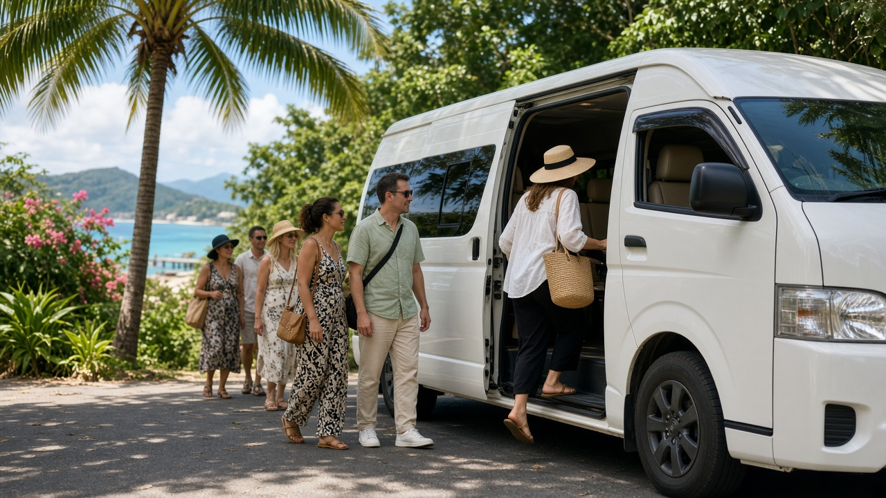

คู่มือรถตู้ภูเก็ต
รถตู้ภูเก็ตสำหรับกรุ๊ป ทัวร์ และงานอีเวนต์
คู่มือรถตู้ภูเก็ตสำหรับกรุ๊ป ทัวร์ และงานอีเวนต์ วางแผนจุดรับ จำนวนที่นั่งตาม fleet จริง ประสานงานหมู่คณะ และเช็คลิสต์ก่อนจอง

Infinity Transport Phuket — รถตู้ภูเก็ตสำหรับกรุ๊ป ทัวร์ และงานอีเวนต์
การเดินทางเป็นกรุ๊ปในภูเก็ต ไม่ว่าจะเป็นทัวร์บริษัท งานสัมมนา งานแต่ง หรือกลุ่มเพื่อนหลายคน มีความท้าทายที่ต่างจากทริปครอบครัวเล็ก ๆ อย่างชัดเจน ได้แก่ การประสานจุดรับหลายแห่ง การเลือกรถให้พอดีกับจำนวนคนและสัมภาระ และการกำหนดไทม์ไลน์ที่ทุกคนตามทัน
บทความนี้โฟกัสการใช้ รถตู้ภูเก็ต สำหรับกรุ๊ป ทัวร์ และงานอีเวนต์ ตั้งแต่การวางแผนจำนวนที่นั่งตาม fleet จริงของ Infinity Transport & Travel Phuket การประสานจุดรับ ข้อมูลที่ควรแจ้งตอนจอง ไปจนถึงเช็คลิสต์ก่อนวันงาน โดยไม่อ้างสเปกรถที่ไม่มีในระบบ
คำตอบสั้นสำหรับ Featured Snippet:
การใช้ รถตู้ภูเก็ต สำหรับกรุ๊ปและงานอีเวนต์ ควรแจ้งจำนวนผู้โดยสาร จุดรับ ลำดับเส้นทาง และเวลาให้ชัด แล้วเลือกรุ่นรถตาม fleet จริง เช่น Toyota All New 8–9 ที่นั่ง หรือ Mercedes Sprinter 10–16 ที่นั่ง รถตู้เหมาภูเก็ต แบบมีคนขับช่วยให้ประสานงานหมู่คณะได้ง่ายกว่าเรียกรถแยกหลายคัน
สารบัญ
1. ทำไมกรุ๊ปและงานอีเวนต์ต้องวางแผนรถต่างจากทริปทั่วไป
2. ประเภทงานที่มักใช้รถตู้ภูเก็ต
3. เลือกรถตาม fleet จริง — จำนวนที่นั่งและความเหมาะสม
4. วางแผนจุดรับและลำดับเส้นทาง
5. ข้อมูลที่ควรแจ้งตอนจองกรุ๊ป
6. ประสานงานวันงาน — บทบาทผู้ประสานหลัก
7. เช็คลิสต์ก่อนวันงานหรือวันทัวร์
8. ทำไมลูกค้าจึงเลือก Infinity Transport & Travel Phuket
9. คำถามที่พบบ่อย
10. สรุปท้ายบทความ
11. ติดต่อเรา (CTA)
ทำไมกรุ๊ปและงานอีเวนต์ต้องวางแผนรถต่างจากทริปทั่วไป
ทริปกรุ๊ปมีตัวแปรมากกว่าการเดินทางครอบครัว 4–5 คน ผู้โดยสารมาจากหลายที่พัก มีเวลาเริ่มงานหรือนัดหมายที่ตายตัว และมักมีสัมภาระหลากหลาย ตั้งแต่กระเป๋าเดินทางไปจนถึงอุปกรณ์งาน หากไม่วางแผนรถล่วงหน้า ความล่าช้าเล็กน้อยที่จุดรับแรกอาจกระทบทั้งวัน
รถตู้นำเที่ยวภูเก็ต แบบ เช่ารถตู้ภูเก็ตพร้อมคนขับ ช่วยให้กลุ่มอยู่ในคันเดียวกัน ลดการแยกกันเดินทาง และมีผู้ประสานกับคนขับได้ชัดเจน ซึ่งสำคัญมากเมื่อมีตารางงานหรือโปรแกรมทัวร์ที่ต้องตามเวลา
ความต่างหลักระหว่างทริปทั่วไปกับทริปกรุ๊ป
| หัวข้อ | ทริปครอบครัว/กลุ่มเล็ก | กรุ๊ป/งานอีเวนต์ |
|---|
| จุดรับ | มักจุดเดียว | หลายจุดหรือหลายโรงแรม |
| จำนวนคน | 3–8 คน | 8–16 คนขึ้นไป |
| ความต้องการเวลา | ยืดหยุ่นได้บ้าง | มักมีเวลาเริ่มงานชัด |
| สัมภาระ | กระเป๋าเดินทาง | อาจมีของงานเพิ่ม |
| การสื่อสาร | คุยกันตรง ๆ | ควรมีผู้ประสานหลัก |
เคล็ดลับ: อย่ารอจนใกล้วันงานค่อยจอง ช่วงฤดูท่องเที่ยวหรือวันที่มีงานหลายงานในเกาะ ความพร้อมของรถขนาดใหญ่อาจจำกัด
ดูภาพรวมบริการได้ที่ หน้าบริการ และ Landing รถตู้ภูเก็ต
ประเภทงานที่มักใช้รถตู้ภูเก็ต
งานบริษัทและทัวร์ incentive
- ทัวร์ทีม-building รอบเกาะ
- รับส่งจากสนามบินไปโรงแรมที่พักกลุ่ม
- เดินทางไปสถานที่จัดงานหรือร้านอาหาร
งานอีเวนต์และงานส่วนตัว
- งานแต่ง งานเลี้ยง หรือ reception
- รับแขกจากสนามบินหลายเที่ยวบิน
- ส่งกลับที่พักหลังงาน
กลุ่มทัวร์และหมู่คณา
- กลุ่มเพื่อน กลุ่มชมรม หรือคลาส reunion
- รถตู้นำเที่ยวภูเก็ต แบบเหมาคันเต็มวันหรือครึ่งวัน
- ทริปที่มีจุดแวะหลายแห่งในตารางเดียว
คำคมจากทีมวางแผนทริป:
“งานกรุ๊ปที่ราบรื่นไม่ได้เริ่มจากรถหรู แต่เริ่มจากตารางที่ทุกคนเข้าใจและจุดรับที่ชัดเจน”
ข้อมูลสถานที่ท่องเที่ยวอ้างอิงได้จาก การท่องเที่ยวแห่งประเทศไทย อ่านแนวทางเหมาคันเพิ่มได้ที่ คู่มือรถตู้เหมาภูเก็ต
เลือกรถตาม fleet จริง — จำนวนที่นั่งและความเหมาะสม
การเลือกรถสำหรับกรุ๊ปต้องดูทั้งจำนวนที่นั่งและพื้นที่สัมภาระ ตัวเลขด้านล่างอ้างอิงจาก หน้ารถทั้งหมด ของ Infinity Transport & Travel Phuket เท่านั้น ไม่ใช่สเปกที่สร้างขึ้น
ตาราง fleet และความเหมาะสม
| รุ่นรถ | จำนวนที่นั่ง | เหมาะกับ |
|---|
| SUV Premium | 3–4 ที่นั่ง | กลุ่มเล็ก ผู้บริหารย่อย หรือ advance team |
| Toyota All New | 8–9 ที่นั่ง | ครอบครัวใหญ่ กลุ่มเพื่อน ทัวร์ขนาดกลาง |
| Toyota Alphard | 4 ที่นั่ง | ผู้บริหาร VIP กลุ่มเล็กที่ต้องการความสบาย |
| Mercedes-Benz | 2 ที่นั่ง | รับแขกสำคัญ งานทางการ คู่รับ |
| Mercedes Sprinter | 10–16 ที่นั่ง | กรุ๊ปทัวร์ งานสัมมนา หมู่คณา |
หลักการเลือกรถสำหรับกรุ๊ป
1. นับจำนวนคนจริง รวม staff หรือผู้ประสานงานที่นั่งรถด้วย
2. แจ้งสัมภาระ กระเป๋าใบใหญ่ กล่องของ หรืออุปกรณ์งาน
3. อย่าเผื่อที่นั่งเต็ม 100% หากมีสัมภาระมาก อาจต้องลดจำนวนผู้โดยสารต่อคัน
4. กรุ๊ปใหญ่เกิน 16 คน อาจต้องใช้หลายคันหรือสอบถาม Custom Fleet Request
ตัวอย่างการจับคู่กรุ๊ปกับรถ
| จำนวนผู้โดยสาร | แนวทางที่มักเหมาะ | หมายเหตุ |
|---|
| 6–8 คน + กระเป๋า | Toyota All New | แจ้งจำนวนกระเป๋าให้ชัด |
| 10–14 คน | Mercedes Sprinter | เหมาะกรุ๊ปทัวร์และงานสัมมนา |
| 15–16 คน | Mercedes Sprinter (เต็มที่นั่ง) | สัมภาระอาจจำกัด ควรแจ้งล่วงหน้า |
| 17 คนขึ้นไป | หลายคันหรือสอบถามทีมงาน | ประสานเวลารับให้ตรงกัน |
เคล็ดลับ: หากมีผู้บริหารปะกับทีมงานทั่วไป อาจแยกเป็น Alphard/Mercedes-Benz สำหรับผู้บริหาร และ Sprinter/All New สำหรับทีม แจ้งทีมงานตั้งแต่จอง
วางแผนจุดรับและลำดับเส้นทาง
กรุ๊ปที่พักคนละโรงแรมเป็นสถานการณ์ที่พบบ่อย การกำหนดลำดับจุดรับมีผลต่อเวลาถึงจุดหมายสุดท้าย
ขั้นตอนวางแผนจุดรับ
1. รวบรวมรายชื่อที่พัก ของทุกคนหรือทุกกลุ่มย่อย
2. จัดกลุ่มตามโซน เช่น ป่าตอง กมลา กะตะ ราไวย์
3. กำหนดลำดับรับ จากโซนที่ไกลจุดหมายไปใกล้ หรือตามเวลาที่สะดวก
4. กำหนดเวลารอสูงสุด ต่อจุด เพื่อไม่ให้คนมาช้าทำทั้งกรุ๊ปล่าช้า
5. แจ้งคนขับและผู้ประสาน ลำดับจุดและเบอร์ติดต่อแต่ละจุด
ตารางตัวอย่างจุดรับหลายโรงแรม
| ลำดับ | จุดรับ | เวลาโดยประมาณ | หมายเหตุ |
|---|
| 1 | โรงแรม A (กมลา) | 08:00 | รับ 4 คน |
| 2 | โรงแรม B (ป่าตอง) | 08:25 | รับ 5 คน |
| 3 | โรงแรม C (ป่าตอง) | 08:40 | รับ 3 คน |
| 4 | จุดหมาย — สนามบิน/สถานที่งาน | 09:30 | แจ้งเที่ยวบินหรือเวลาเริ่มงาน |
เคล็ดลับ: ส่งรายชื่อจุดรับเป็นลิสต์เดียวให้ทีมงานและคนขับ ลดการสื่อสารซ้ำในวันงาน
หากมีการรับจากสนามบิน ดูข้อมูลทั่วไปได้ที่ เว็บไซต์ทางการของท่าอากาศยานภูเก็ต
ข้อมูลที่ควรแจ้งตอนจองกรุ๊ป
รายการข้อมูลสำคัญ
- วันที่และช่วงเวลาใช้บริการ
- จำนวนผู้โดยสารรวม (แยกผู้ใหญ่/เด็กถ้ามี)
- รายการจุดรับและลำดับ
- จุดส่งหรือจุดหมายสุดท้าย
- จุดแวะระหว่างทาง (ถ้ามี)
- จำนวนกระเป๋าและของชิ้นใหญ่
- ประเภทงาน (ทัวร์/สัมมนา/งานแต่ง ฯลฯ)
- ต้องการรถกี่คันและรุ่นใด
- ชื่อและเบอร์ผู้ประสานหลัก
- ความต้องการพิเศษ (ถ้ามี)
รูปแบบบริการที่มักใช้กับกรุ๊ป
- รับส่งเที่ยวเดียว — สนามบินไปโรงแรม หรือโรงแรมไปสถานที่งาน
- เหมาครึ่งวัน/เต็มวัน — ทัวร์รอบเกาะหรือโปรแกรมทั้งวัน
- หลายคัน — กรุ๊ปใหญ่ที่ต้องการออกพร้อมกัน
รายละเอียดรูปแบบบริการดูได้ที่ หน้าราคา โดยราคาขึ้นกับรายละเอียดทริป ควรขอใบเสนอราคาตามข้อมูลจริง
ประสานงานวันงาน — บทบาทผู้ประสานหลัก
กรุ๊ปที่มีผู้ประสานหลักคนเดียวมักเดินทางได้ราบรื่นกว่าการให้ทุกคนติดต่อคนขับเอง
หน้าที่ผู้ประสานหลัก
- ยืนยันเวลารับกับทีมงานคืนก่อนวันงาน
- แจ้งคนขับหากมีคนมาช้าหรือเปลี่ยนจุดรับ
- นับจำนวนคนก่อนออกจากแต่ละจุด
- เป็นจุดเชื่อมระหว่างกรุ๊ปกับคนขับ
- เก็บช่องทางติดต่อทีมงานไว้พร้อมใช้
สิ่งที่ควรเตรียมก่อนขึ้นรถ
- รายชื่อผู้โดยสารและที่พัก (ถ้ามีหลายจุดรับ)
- ตารางวันงานหรือโปรแกรมทัวร์
- ป้ายหรือข้อความสำหรับจุดนัดพบ (ถ้าจำเป็น)
- เบอร์ติดต่อฉุกเฉินของทีมงาน
คำคม:
“ผู้ประสานหลักไม่จำเป็นต้องเป็นเจ้าของงาน แต่ต้องเป็นคนที่ตอบโทรศัพท์ได้และรู้ตารางทั้งวัน”
เช็คลิสต์ก่อนวันงานหรือวันทัวร์
เช็คลิสต์ 3 วันก่อน
- ยืนยันจำนวนคนและรุ่นรถกับทีมงาน
- ส่งรายการจุดรับและลำดับให้ครบ
- ยืนยันเวลาเริ่มและจุดหมายสุดท้าย
- แจ้งการเปลี่ยนแปลงจำนวนคน (ถ้ามี)
เช็คลิสต์วันงาน
- ผู้ประสานหลักติดต่อคนขับเมื่อถึงจุดรับแรก
- นับคนก่อนออกจากทุกจุด
- ตรวจสอบสัมภาระก่อนออกเดินทาง
- แจ้งทีมงานทันทีหากแผนเปลี่ยน
- เก็บของมีค่าไว้กับตัว
เคล็ดลับ: สำหรับงานที่มี dress code หรือของที่ต้องถือ แจ้งล่วงหน้าเพื่อประเมินพื้นที่ในรถ
ทำไมลูกค้าจึงเลือก Infinity Transport & Travel Phuket
Infinity Transport & Travel Phuket ให้ บริการรถตู้ภูเก็ต และ Phuket Van Service สำหรับกรุ๊ป ทัวร์ และงานอีเวนต์ โดยมี fleet หลากหลายตั้งแต่ SUV 3–4 ที่นั่ง ไปจนถึง Mercedes Sprinter 10–16 ที่นั่ง
ลูกค้าสามารถแจ้งจำนวนคน จุดรับ ลำดับเส้นทาง และประเภทงาน เพื่อให้ทีมงานแนะนำรถและรูปแบบบริการที่เหมาะสม ดูรุ่นรถทั้งหมดที่ หน้ารถทั้งหมด และสอบถามได้ที่ หน้าติดต่อ
อ่านแนวทางจองทั่วไปได้ที่ วิธีจองรถตู้ภูเก็ต
สรุปท้ายบทความ
รถตู้ภูเก็ต สำหรับกรุ๊ป ทัวร์ และงานอีเวนต์ ช่วยให้หมู่คณะเดินทางเป็นชุด ลดความสับสนเรื่องจุดรับ และมีแผนที่ตรวจสอบได้ การเลือกรถตาม fleet จริง การกำหนดลำดับจุดรับ และการมีผู้ประสานหลัก คือสามสิ่งที่ทำให้วันงานราบรื่น
สิ่งที่ควรทำทุกครั้งคือแจ้งจำนวนคน จุดรับ ลำดับเส้นทาง และสัมภาระให้ครบ จากนั้นใช้เช็คลิสต์ในบทความนี้ตรวจสอบก่อนวันงาน หากวางแผนรอบคอบ รถตู้เหมาภูเก็ต จะช่วยให้กรุ๊ปโฟกัสที่งานหรือทัวร์ ไม่ใช่การแก้ปัญหาการเดินทางหน้างาน
ติดต่อเรา (CTA)
กำลังวางแผน รถตู้ภูเก็ต สำหรับกรุ๊ป ทัวร์ หรืองานอีเวนต์อยู่ใช่ไหม
แจ้งจำนวนผู้โดยสาร จุดรับ ลำดับเส้นทาง และวันที่ ทีมงาน Infinity Transport & Travel Phuket พร้อมช่วยแนะนำรุ่นรถจาก fleet จริงและรูปแบบบริการที่เหมาะสม
จองรถตู้ภูเก็ต
กลับไปหน้าบทความทั้งหมด
คำถามที่พบบ่อย (FAQ)
กรุ๊ป 12 คนควรใช้รถรุ่นไหน
จาก fleet จริง Mercedes Sprinter รองรับ 10–16 ที่นั่ง มักเหมาะกับกรุ๊ปขนาดนี้ แต่ควรแจ้งจำนวนกระเป๋าด้วย เพราะสัมภาระมากอาจต้องพิจารณาเพิ่ม
รับคนจากหลายโรงแรมในวันเดียวได้ไหม
ได้ ควรส่งรายการโรงแรมและลำดับรับให้ทีมงานตั้งแต่จอง และกำหนดเวลารอสูงสุดต่อจุด
งานสัมมนาต้องจองล่วงหน้ากี่วัน
ขึ้นกับช่วงเวลาและขนาดกรุ๊ป ช่วงฤดูท่องเที่ยวหรืองานใหญ่แนะนำให้ติดต่อเร็วขึ้นเมื่อทราบวันงานแล้ว
มีทั้งผู้บริหารและทีมงาน จัดรถอย่างไร
อาจแยกเป็น Alphard หรือ Mercedes-Benz สำหรับผู้บริหาร และ Sprinter หรือ All New สำหรับทีม แจ้งความต้องการตั้งแต่สอบถามราคา
กรุ๊ปเกิน 16 คนทำอย่างไร
อาจใช้หลายคันหรือสอบถาม Custom Fleet Request ผ่านทีมงาน ควรประสานเวลาออกให้พร้อมกัน
รถตู้นำเที่ยวภูเก็ตสำหรับกรุ๊ปเหมาคันกี่ชั่วโมง
ขึ้นกับโปรแกรมทัวร์ มีทั้งเหมาครึ่งวันและเต็มวัน ดูแนวทางรูปแบบบริการที่ หน้าราคา และปรับตามจุดหมาย
ต้องมีป้ายชื่อรับกรุ๊ปไหม
ขึ้นกับประเภทงาน งานรับจากสนามบินหรือจุดนัดพม มักใช้ป้ายชื่อ แจ้งความต้องการตอนจอง
สามารถรับจากสนามบินหลายเที่ยวบินได้ไหม
ได้ แต่ต้องแจ้งเลขเที่ยวบิน เวลาถึงโดยประมาณ และจำนวนคนต่อเที่ยวบิน เพื่อวางแผนรถและเวลา
ราคากรุ๊ปคิดอย่างไร
ราคาขึ้นกับรูปแบบบริการ จำนวนคัน ประเภทรถ เส้นทาง และช่วงเวลา ควรขอใบเสนอราคาตามรายละเอียดงานจริง
มีอุปกรณ์งานขนาดใหญ่ ต้องแจ้งอะไร
แจ้งขนาด จำนวนชิ้น และน้ำหนักโดยประมาณ เพื่อให้ทีมงานประเมินว่ารถรุ่นใดรองรับได้
เปลี่ยนจำนวนคนหลังจองได้ไหม
แจ้งทีมงานทันที การเปลี่ยนจำนวนคนอาจมีผลต่อรุ่นรถและจำนวนคันที่ต้องใช้
ติดต่อจองผ่านช่องทางไหนได้บ้าง
ติดต่อได้ที่โทรศัพท์ 062 664 4542, LINE https://line.me/ti/p/HOu32mNzEG, อีเมล infinitytransporttravel@gmail.com หรือผ่าน หน้าติดต่อ